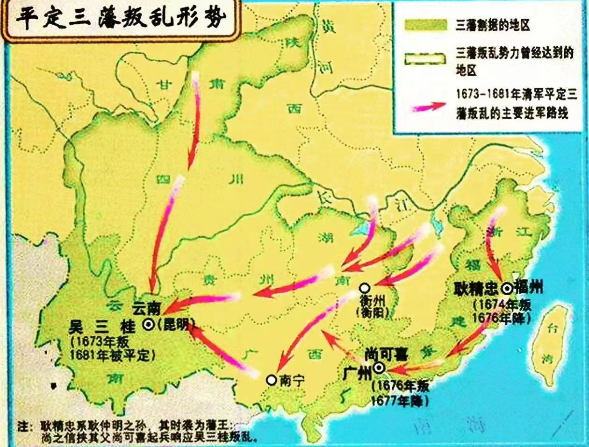
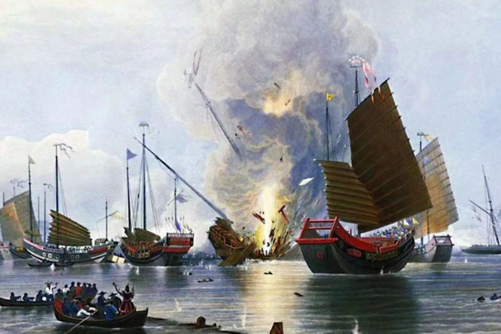

三藩之乱，是清朝初期三个藩镇王发起的反清事件。这三个藩镇王分别是平西王吴三桂、平南王尚可喜、靖南王耿精忠。此事件从1673年开始，至1681年结束，历时8年，是清初最大的一场叛乱，给当时的社会和经济带来了巨大的冲击。
事件的起因是康熙皇帝为了加强中央集权，决定撤除三藩。这一决定引发了三藩的不满和反叛。吴三桂首先在云南起兵，随后尚可喜和耿精忠也相继响应。他们的军队迅速占领了大片土地，并与清军展开了激烈的战斗。
在这场叛乱中，清军面临着巨大的挑战。三藩的军队数量庞大，战斗力强，且得到了部分汉族人民的支持。然而，清军凭借着坚定的决心和强大的实力，逐渐扭转了战局。康熙皇帝亲自指挥军队，采取了一系列有效的战略和战术，最终成功平定了叛乱。
三藩之乱的平定对于清朝的发展具有重要意义。首先，它加强了中央集权，巩固了清朝的统治地位。其次，它促进了国家的统一和稳定，为清朝的繁荣奠定了基础。此外，这场叛乱也加速了满汉之间的融合和交流，推动了多民族国家的形成和发展。
然而，三藩之乱也暴露出清朝在统治和政策方面的一些问题和不足。例如，清朝在处理民族关系和中央与地方关系时存在一定的困难和挑战。这些问题在后来的历史中也得到了进一步的体现和反思。
总之，三藩之乱是清朝初期的一场重大事件，对于清朝的发展和历史进程产生了深远的影响。它既是清朝加强中央集权和统一国家的重要里程碑，也暴露出清朝在统治和政策方面的一些问题和不足。通过回顾这段历史，我们可以更好地理解和认识清朝的发展和演变。

鸦片战争是1840年至1842年英国对中国发动的一场非正义的侵略战争，以中国失败并赔款割地告终，是中国近代屈辱史的开端。中英双方签订了中国历史上第一个丧权辱国不平等条约《南京条约》。鸦片战争前，自给自足的小农经济在中国一直占统治地位。个体农业和家庭手工业相结合，构成社会经济稳固的基础。农民不但生产自己需要的农产品，而且生产自用的大部分手工业品。这种经济结构通常以家庭为单位，其特点是耕织结合。鸦片战争后，在外国商品的冲击下，传统的经济结构发生了变化，小农经济开始解体。鸦片战争是中国历史的转折点，使中国的社会经济发生了根本性的变化。西方列强通过不平等条约，不断扩大对中国的侵略，冲击着中国传统的自给自足的小农经济。中国逐渐依附于世界资本主义体系，沦为列强的商品市场和原料产地。鸦片战争不仅改变了中国传统的经济结构，而且使中国的社会结构发生了变化。五口通商后，买办迅速发展成为一个新兴的社会阶层。他们除经营商业贸易外，还通过获取大量佣金、回扣，聚敛起巨额财富；随后又进一步渗透到政治领域，并凭借着对西方的了解，在社会、政治、经济和文化诸方面发挥着较大影响。